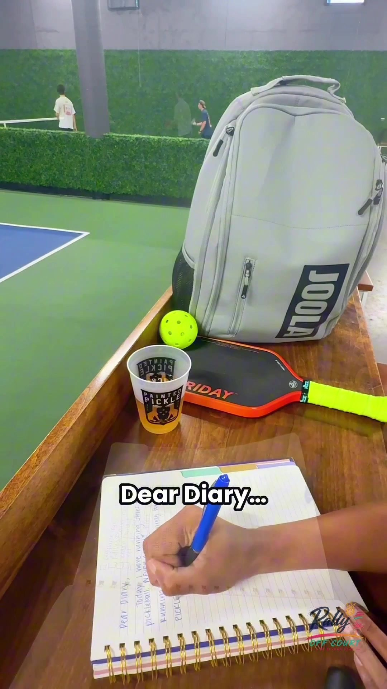

Create
Dear Diary, for Montis
Concept / Voice / Creator / Editor / Product storytelling
A creator film where the concept, voice, performance, and edit are all part of Lauren’s role.
← Back to Casting Sheet
RoleConcept / Voice / Creator / Editor
FormatCreator film
FocusProduct storytelling
On this siteCreate
What it shows
Authorship on screen.
Lauren’s role spans concept, voice, creator performance, edit, and product storytelling.
The finished film shows both the idea and the execution.
Local portfolio video / authored creator work
Notes
What I made.
Voice
The narrative voice is part of the creative treatment rather than a neutral product read.
Edit
Editing is part of Lauren’s credited role on the portfolio.
Source
Portfolio video, poster, and production cut used on this site.
Next: Field
Take it outside.
Next: field work inside a live activation environment.